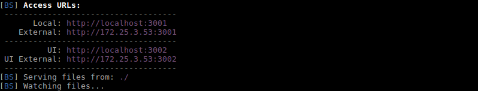

Angular JS Project
This is a basic boilerplate to kickstart your next Angular 1.x project, along with some useful tools.
Includes
- Basic Node.JS server
- Angular App Folder Structure
- Widely Used Dependencies
- Widely Used Developer Dependencies
- Unit Testing Suite ( Karma and Jasmine )
- Coverage Tool
- Linter Tool ( EsLint )
- Documentation Generator ( Dgeni )
Installation
Prerequisites
- Install Node.JS through official site or (better) nvm
- Install/Update npm
npm install npm@latest -g
Project scaffold
git clone angular
cd angular
npm install
Structure
- app
- app.js
- common
- feature
- featureController.js
- featureController.spec.js
- featureService.js
- featureService.spec.js
- featureView.html
- assets
- css
- img
- coverage
- docs
- app
- build
- config
- content
- server.js
- package.json
- karma.conf.js
- gulpfile.js
- .eslintrc.json
- .gitignore
- .eslintignore
- index.html
Explanation
app folder holds all the app files. app.js file is our main module which will load all the app its feature will be developed in its own folder, separated into a controller, a service, a view and, their tests. common folder holds files (views, services, etc) that ought to be used from many features
assets folder holds static asset files like images and css.
coverage folder holds the report of the coverage tool, navigating to the report folder from a browser will show a view of the test coverage.
- docs folder holds all the files for the documentation generation procedure. Inside config folder are the processors that create the documentation and the templates that bind them. build folder holds the pre-processed files that holds the logic behind the generation. app folder holds the final app which is the generated documentation in which, a server must be started so that it will be accessible from a web browser.
- server.js is the file that creates our simple Node.JS server
- package.json holds all are npm-based scripts and depend
- karma.conf.js holds our karma configuration for test
- gulpfile.js holds our gulp tasks that create the documentation
- .eslintrc.json holds our configuration for the linter tool
- .gitignore holds the rules for the files that we want to exclude from git
- .eslintignore holds the rules for the files that we want to exclude from the linter tool
Usage
Project start
node start
Running the above command, you should see a response like that in your shell : Express server listening on port 3000 Now you can navigate with a browser to http://localhost:3000 and see your app running
Test & Coverage start
npm run test
Running the above command, you should see a response like that in your shell : After that your tests will run and you will see which were successful and which not. After all the tests have run, you should see a response like that in your shell : There you can see a representation of the test coverage right in your shell (you can also navigate to the appropriate url to see the same info in a web-based form)
Linter start
npm run lint
Running the above command, you will see the results of your linter. If your code follows all your linter rules, there will be no further output, if not, you should see something like this.

Documentation start
npm run doc
Running the above command, you will see the gulp tasks running which execute the dgeni configuration using your processors. After the whole process is done we can navigate to the output folder and create a server, so that we will be able to navigate to our documentation
cd docs/app
lite-server start
After that you should see an output like that in your shell.  Navigating to the above urls you will be able to see your generated documentation.